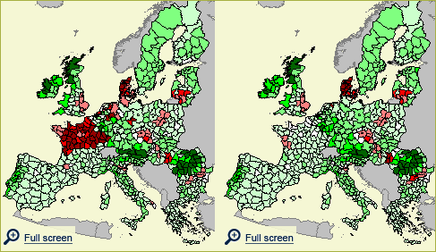
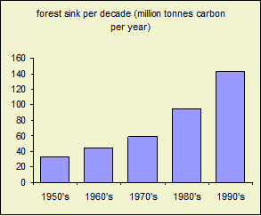
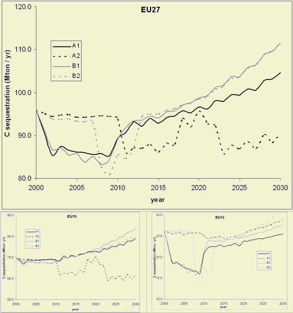

Highlights
Forests and pastures sequester carbon in biomass and vegetation (sinks) while
cropland soils emit carbon; they are carbon sources. Altogether, the terrestrial
biosphere nowadays sequesters 7% of anthropogenic CO2.
Overall, European's terrestrial biosphere will sequester 6-8% of greenhouse gas emissions annually up to 2030.
The major part of Europe will remain a sink for carbon between 2000 and 2030. Largest sinks are found in the forest areas of Germany, Austria and Romania. The major cropland areas (Denmark, Southeast UK, Czech, Hungary) will emit carbon in all scenarios. Especially in France and Poland, carbon sequestration is scenario dependent.
Land use changes can result in a decrease of carbon sequestration of 6 Mton C / year in the Continental Market scenario to an additional carbon sequestration of maximum 16 Mton C/year in the other three scenarios.
Requirements for agricultural land and resulting land abandonment and
nature expansion versus expansion of agricultural lands is the main driver for
carbon sequestration. Therefore, although designation of less favoured areas
does not influence agricultural land areas, it can influence the spatial distribution
of carbon sources and sinks.

Figure 1 - Maps of carbon sequestration in the two
extreme scenarios: left the Continental market scenario with an overall loss
of carbon and right the Regional Communities scenario with an overall sequestration
of carbon. The maps show that large regional differences occur.
Past developments
Sequestration of CO2 in soil and vegetation is an important part of the carbon
cycle in Europe. Forests are sinks of carbon; they sequester large amounts of
carbon in biomass and soil, especially when they are still growing. Croplands
on the other hand emit carbon.
Up to the 19th century, large parts of Europe were deforested for agricultural
purposes and degraded due to among others heathland sod cutting, fuel-wood collection
and grazing. Between the late 19th century and the 1950's, much of the agricultural
and degraded land was not needed anymore and was afforested again. Therefore,
European forests are still young and are sequestering increasing amounts of
carbon (figure 2).
Nowadays, the major part of Europe sequesters carbon. The largest carbon uptake
is found in these still growing forests in central Europe. Cropland areas, like
southern Hungary, southeast UK and Denmark, emit carbon. Carbon sequestration
equals around 7% of the annual anthropogenic carbon emission

Figure 2 - Forest sink per decade.
Future developments
The EU15 and EU12 differ in future carbon sequestration in land use, land use
change and forestry. In the Global Economy scenario, carbon sequestration will
decrease in EU12 and some regions will emit large amounts of carbon up to 2010.
This reflects arable land expansion in the EU12 up to 2010. In the EU15 on the
other hand, sequestration slightly decreases up to 2010 and after that will
increase. In the Continental Market scenario, agricultural land will expand
in EU15 while in the EU12 it decreases slightly. Therefore sequestration will
decrease dramatically in EU15. Changes in carbon sequestration in the Global
Cooperation scenario shows a trend comparable with the Global Economy scenario,
but amounts of sequestration are higher in as well the EU12 as the EU15. In
the Regional Communities scenario, there is also an initial decrease of sequestration,
but after that sequestration will increase strongly because of cropland abandonment
and establishment of new forests all over Europe.
Especially in France and Poland, differences in sequestration between the scenarios
are large. Further, the major forest areas are expected to remain sink up to
2030 while the major cropland areas, that are the strongest sources, are expected
to remain sources.
Overall, carbon sequestration in land use, land use change and forestry will
decrease the coming decade and will after that increase in all scenarios but
Continental Market (figure 3). In the Continental Market scenario, sequestration
will be 6% lower in 2030 compared to 2000. In the other scenarios, there is
an increase of around 15%. Different political choices thus can either result
in additional carbon sequestration or in emission.

Figure 3a, b, c - carbon sequestration for the baseline
scenarios
Policy effects
Designation of LFA's influences the spatial distribution of croplands. Because
croplands emit carbon, this also influences the spatial distribution of carbon
sinks.
Policies that stimulate the use of biofuels cause cropland expansion. This causes
an extra carbon emission, especially if deforestation is needed for the cropland
expansion.
Most important drivers
Carbon sequestration is driven by land use change: croplands emit carbon, while
forests and pasture sequester carbon. Deforestation has the largest impact:
forests store large amounts of carbon in biomass, and large parts of these biomass
carbon stocks are lost upon deforestation. Other land use changes have less
impact because annual losses and gains of carbon are smaller than forest biomass
loss.
Building up a forest biomass carbon pool takes a lot of time. Therefore, net
increase of forest area does not immediately increase carbon sequestration and
therefore location shifts of forests are very unfavorable for terrestrial carbon
sequestration.
Discussion
Carbon sequestration in forestry activities that took place after 1990 can be
charged as a sink according to the Kyoto protocol. Eight EU15 countries and
Slovenia have so far decided to do so and to charge their forestry activities.
Together they expect to sequester 4.8 Mton C/year. This is reached in none of
the scenarios: all scenarios expect a decreasing forest carbon sequestration
up to 2010. Although these goals are not met, in all scenarios the terrestrial
ecosystem keeps on sequestering 5-7% (EU15) to 6-11% (EU12) of greenhouse gas
emissions.
Used methodology
For each land use type, a country-specific standard amount of emission from
or sequestration in the soil per km2 per year is specified; the emission factor.
When land use on a certain location changes, the emission/sequestration changes
immediately to the emission factor of the new land use type. In forests, the
emission factor is differentiated between age and in arable lands the emission
factor is differentiated between soil organic carbon content. Besides carbon
in soils, forest sequesters large amounts of carbon in vegetation. When forest
is removed, a major part of carbon in the forest biomass is lost from the terrestrial
ecosystem.